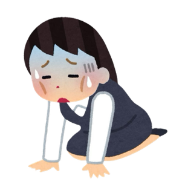

生理已成年，
忙乱中执行力却掉线。
在多重社会身份与绩效指标的压力下，个体常处于高负荷运转状态，如同图示中忙乱的社畜小人。
“初级大人” (Oopsie Adults) 现象：指个体在职场人、学生、独立生活者等多重身份频繁切换时，导致的“认知负荷过载”状态。这并非个体主观意愿的缺失，而是客观压力下的必然结果。
物品遗漏、时间预估偏差等难以预期的小失误（Oopsie），持续消耗着个体的精力与情绪资源。Oopsie Adults就是“接住手忙脚乱的生活安全网”。
晨间出行场景的痛点分析
基于 71 份有效问卷及 8 份深度访谈的定量与定性数据统计
晨间准备流程失控现象
数据结论： 53.5%的受访者临近出门时仍处于无序忙乱状态；41%的人因时间预估不准确而产生反复的焦虑情绪。
高频遗忘物品类别分析
数据结论： “特定场合必备品”（如转接头、文件）遗忘率高达 45%。相较于肌肉记忆类物品，动态需求构成了主要的记忆盲区。
现有依赖意志力的防范机制局限性
调研显示，用户普遍采用“前一晚准备”或“多重闹钟”策略，但实际效果存疑。
59.15% 的样本反馈：
现有防范方法仍会“偶尔出现疏漏”。在疲劳或突发状况下，依赖个人意志力的防线极易失效。
用户诉求转变：
急需从被动式的提醒工具，转向具备“主动防御与拦截”能力的系统化解决方案。
典型用户画像与 HMW 策略推导
基于痛点分析，推导旨在“消除负面体验 (Remove the bad)”的产品策略

Sookie (21岁)
在校生 / 实习生
核心痛点场景： 遗漏汇报所需的关键配件（如转接头），导致职业形象受损。
POV： 需要系统根据日程事项，主动推导并提示关联物品。
📦 策略：一键场景克隆
基于日程关键词自动生成关联物品清单，并纳入强制核对流程，从根源杜绝遗忘可能。
Lily (28岁)
策展人 / 高频信息处理者
核心痛点场景： 频繁在多个应用间切换以复制粘贴地址与时间信息，造成显著的精神损耗。
POV： 需要一个信息中枢，实现跨平台信息的自动聚合。
🤖 策略：AI 全局抓取
打通日历与通讯软件，智能提取关键信息并生成可视化行程，消除人工跨平台操作。
Joy (30岁)
中层主管 / 时间敏感型
核心痛点场景： 导航软件的时间预估偏差引发严重的时间焦虑，被迫采取过度防御性的提前出行。
POV： 需要透明、具备参考价值的时间预测数据来重建信任。
⏱️ 策略：ETA 置信区间
摒弃单一的绝对时间预测，提供基于概率的到达时间区间，以数据透明度缓解用户焦虑。
三大核心功能模块规划
目标：通过系统化辅助，确保每日待办事项高效达成。
智慧时间规划
取代传统固定闹钟。结合实时路况与待办事项，动态反推最佳的起床与出发时间节点。
强制出门核对
打通线上线下物理连接。出门前须通过NFC标签触碰完成关键物品的强制性物理确认。
沉浸式流程引导
提供包含晨间洗漱在内的全流程语音/视觉引导，降低认知负荷，实现晨间行为的自动化辅助。